SAT algorithm and point of collision
How do we solve collision
We will have 3 different methods for solving collision:
- Polygon vs Polygon - We have to use a algorith called SAT.
- Polygon vs Circle - Again we will have to use SAT, with a slight difference.
- Circle vs Circle - We will simply check if the distance is lower or equal to the radiuses added.
SAT
What is the purpose of SAT
SAT - Separating Axis Theorem. Basically, the goal of SAT (and every other collision detection) is to test and see if is a gap between two shapes. The method that SAT uses is what makes it unique.
What is the principle of SAT
Let's start by imagining a torch being lit up. If we go arround the two polygon we're checking with the torch, if we see gap in the shadow, it means they are not colliding just like here:
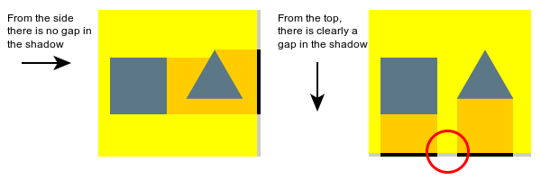From a programming point of view it would be almost impossible to replicate, due to the inability to check every angle which is technically infinite number of angles to check. However luckly we don't have to check every angle. We need to check only the angle of each side of both polygons:
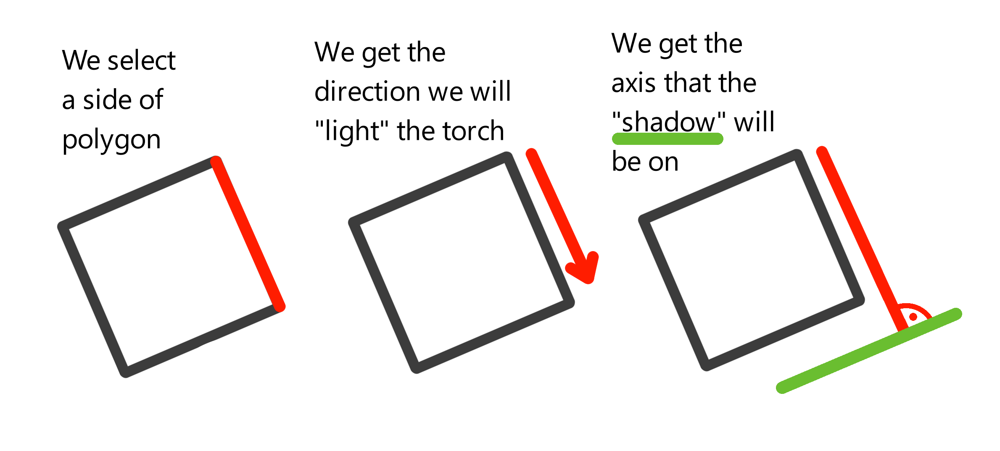If I should put it into words: SAT checks if both polygons projected to every perpendicular axis to every side don't have gap.
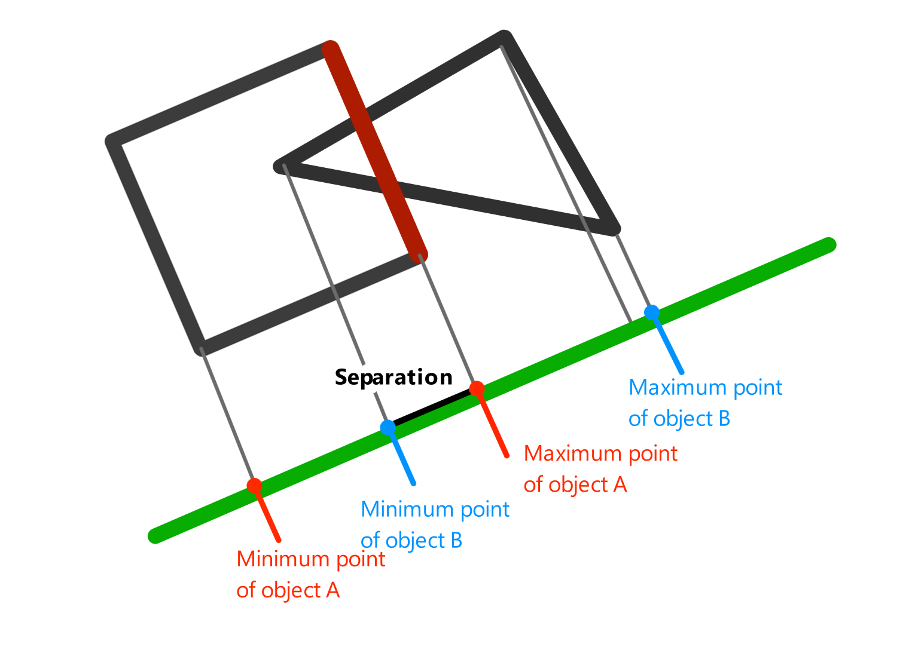How to implement this?
So this is a very repetitive, it can be solved in few steps:
Step 1
We loop through all vertices of both polygons:
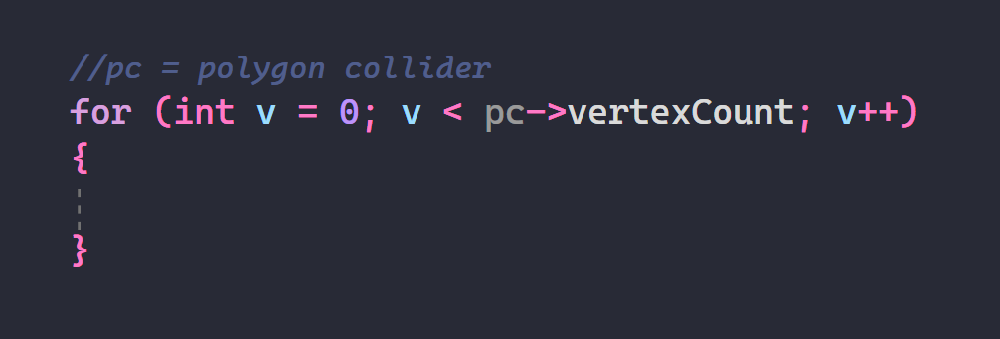Step 2
We get the axis that the shadow is on. To get it we first need to get the side of the polygon. We will get the side by using the index v and then we find the next/upcoming index v. We will then get the positions of the vertices on these indexes. Afterwards we will use this to get the perpendicular axis:
PerpendicularX = vertices[v].y - vertices[upcomingV].y
PerpendicularY = vertices[upcomingV].x - vertices[v].x
Then we will normalize this value. The final code can look as so:
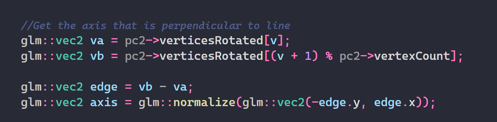Step 3
When we have this we need to find the min/max points of each polygon(see this).
How do we do that?
I would recommend you to create function for this... First of all we will create two floats min and max.
We set min and max to the dot product of the first vertex in the polygon and the axis like this:
We will loop through all the vertices of polygon except the first and do the same dot product for each of them as so:
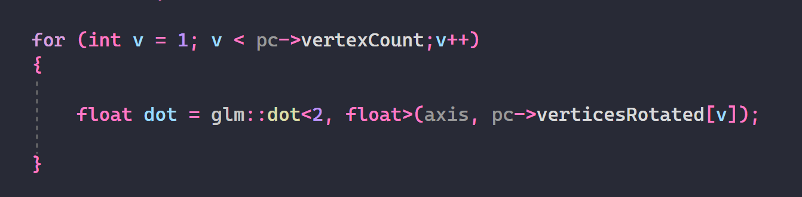When this is done we need to check if the value we calculated is lower than the current minimal or larger than current largest. If yes we will overwrite them. Final code for looking up min/max on axis should look like this:
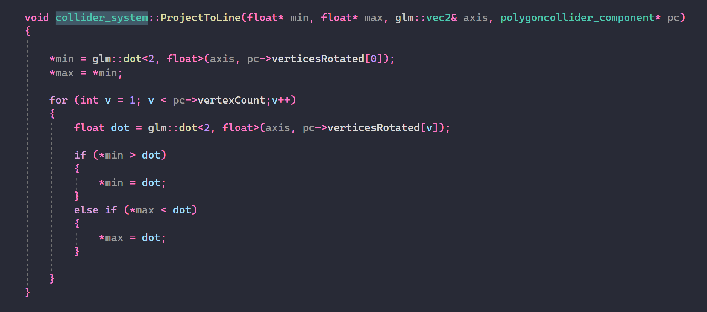Step 4
Once we have the min/max functions in place just so:
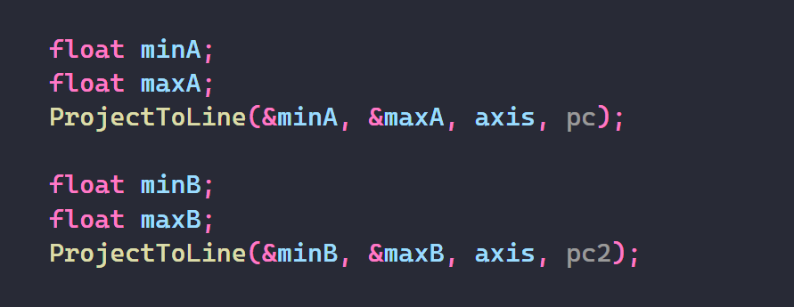We check whether there's gap. We will do it like this:

Step 5
If there isn't gap we can start with getting the separation or sometimes called penetration(see this). To do that we need to get the position of polygon projected on the axis. If we think about it there are 3 options that can happen:
- First polygon on right the second on left - We will move it in the axis(the axis that's perpendicular to the side see this)
- First polygon on left the second on right - We will move it in the opposite direction of axis
- Both on same value on the axis - We will choose one direction.
First of all we can't use the transform component for position because that's meant as center of mass and center of mass doesn't have to be in the center. Therefore we will calculate the average position of all vertices. The function for that can look something like this:
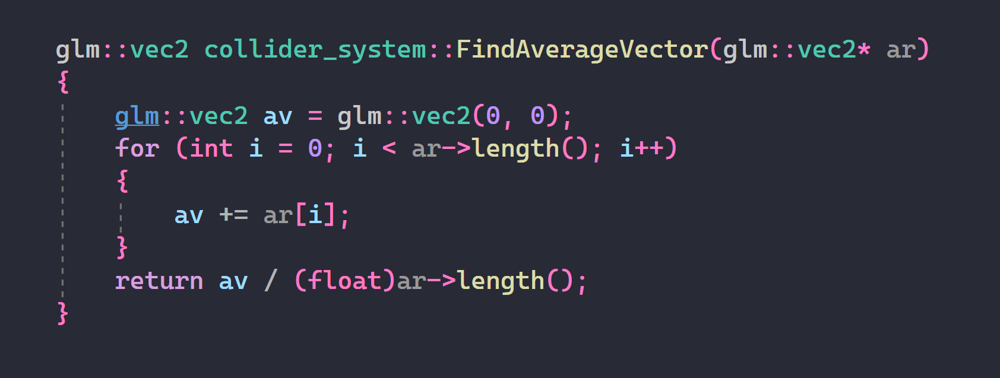Once we have that we will project it on the line and find which one of the three is it:
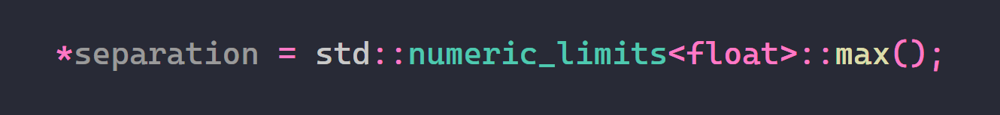Step 6
We need to find the smallest penetration, because we want the smallest way to fix the penetration. The penetration is equal to min2 - max1 or min1 - max2,
it depends on the position of body we just calculated.
When the first body is on left we will get the penetration using this:
penetration = min2 - max1
When the first body is on right or the body are on the same value we will get the penetration using this:
penetration = min1 - max2
NOTE: The penetration will always be negative, therefore to get the "lowest" penetration we could technically say that we will get the largest. The largest is the one most close to zero.
We also need a variable to store the smallest penetration. And we need to set it to the largest possible penetration(in negative, therefore lowest):
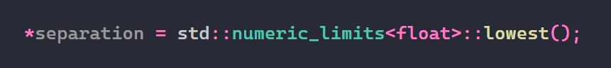So we will check if penetration is lower than the current lowest penetration. Then we will overwrite the current lowest penetration and the axis:
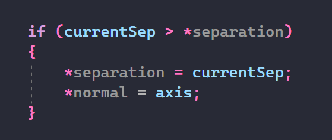Step 7
Do the same for polygon number 2 and if all goes well return true.
Summary
Now you know how to check polygon vs polygon collision. The final code should look something like this:
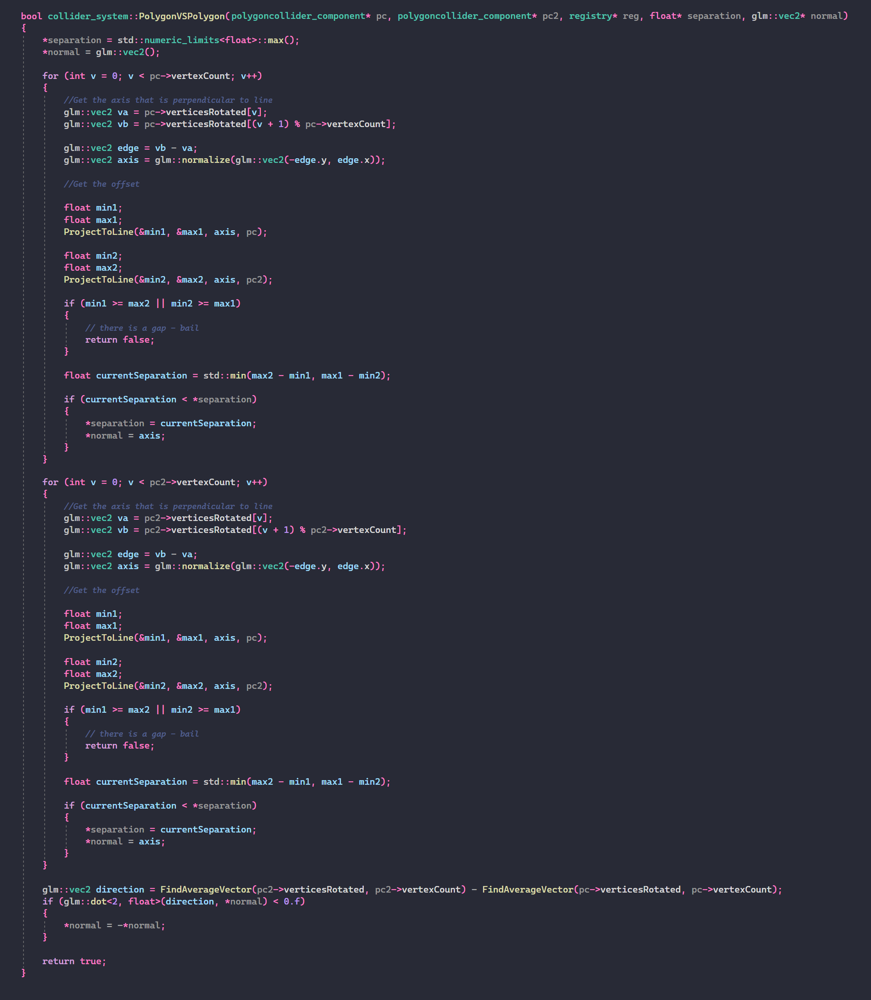Dot product
value = vector1.x * vector2.x + vector1.y * vector2.y